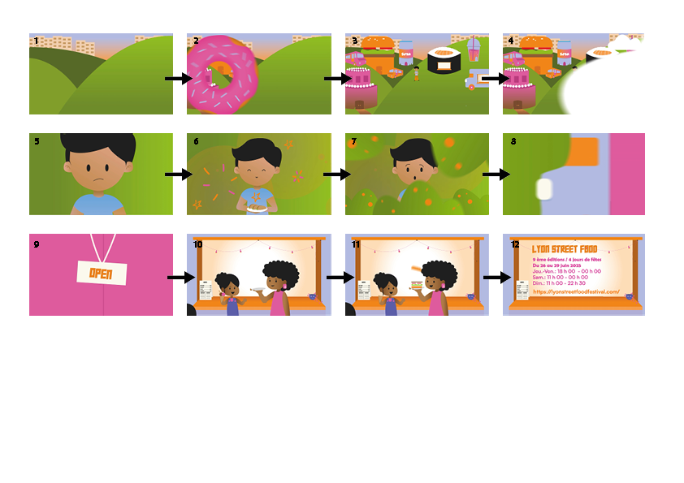

Conception d’un motion design fictif centrée sur l’aspect culinaire du festival Lyon Street Food, visant à retranscrire l’ambiance immersive des stands, la diversité des plats et l’expérience sensorielle offerte aux visiteurs.
Une phase de recherche préalable basée sur l’analyse de plusieurs affiches a permis de dégager des principes visuels, graphiques et narratifs adaptés à l’univers de l’événement.
Cette étape a été suivie de la création d’un mini storyboard puis de la production de l’animation sur After Effects dans le cadre d’un premier projet de motion design.
Adobe Illustrator et After Effects